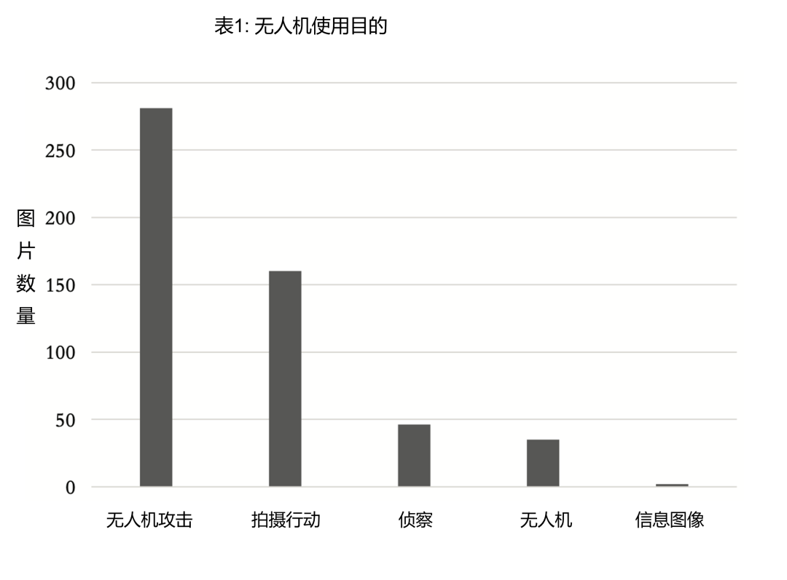

收录于合集

作品简介
【作者】 Emil Archambault，杜伦大学政府和国际事务博士生；Yannick Veilleux- Lepage，莱顿大学管理和全球事务副教授
【编译】 王泽尘（国政学人编译员，曼彻斯特大学硕士生）
【校对】 扎西旺姆
【审核】 谢菁
【排版】 秦子宁
【美编 】黄竹音
【来源】 Emil Archambault & Yannick Veilleux-Lepage, Drone Imagery in Islamic State Propaganda: Flying Like a State, International Affairs , Volume 96, Issue 4, July 2020, Pages 955–973, https://doi.org/10.1093/ia/iiaa014.
.
期刊简介
《国际事务》(International Affairs)，是世界领先的国际关系期刊之一，也是少数几本涵盖整个学科的期刊之一。成立时间已超过90年，以学术严谨、注重实践而闻名。近五年影响因子为3.176。
伊斯兰国宣传中的无人机图像：
像国家一样飞行
Drone Imagery in Islamic State Propaganda: Flying Like a State
Målfrid Braut-Hegghammer
Yannick Veilleux-Lepage
推荐语
政治发展和科技进步有着千丝万缕的联系。近几年，从美国刺杀苏莱曼尼到纳卡地区冲突，无人机在国际政治舞台出现的频率越来越高。本文聚焦伊斯兰国对无人机的使用，突破传统武力冲突中的战术意义，围绕着无人机宣传中的象征意味进行分析，进而挖掘其深层次的战略意义。
摘要
本文对2016年10月至2018年12月期间，伊斯兰国使用无人机拍摄并用于宣传的图像数据集进行全面分析。通过分析ISIS使用无人机图像的三个主要用途– 无人机袭击图像、其他类型攻击图像和观察图像，作者认为，ISIS无人机的使用有别于其他国家和非国家行为体的主要原因在于其中交流和象征的价值。虽然ISIS使用无人机袭击是出于战术而非战略原因，但使用无人机拍摄汽车炸弹袭击的场面可以达到战略效果。在概述了ISIS使用无人机支援空中作战和拍摄地面(尤其是汽车炸弹袭击)袭击的情况后，作者认为，根据政治地理学的研究，ISIS通过无人机飞行来确立和加强对领土主权控制的主张，以此达到宣传效果。作者认为无人机图像的使用，利用了长期存在的视觉和话语策略，这些策略将垂直等级制度和具有控制含义的飞行联系在一起，使ISIS能展示其空中主权。本文通过分析ISIS的无人机宣传，提供了一个观察非国家行为者对于无人机和无人机图像交流价值感知情况的罕见的视角，并建议进一步将垂直的政治地理研究纳入政治暴力和话语研究之中。
01
介绍
2018年8月4日，有人企图操控一架满载爆炸物的无人机暗杀委内瑞拉总统尼马杜罗，这似乎佐证了学者、政策制定者和安全从业人员对无人机的担忧和警告，远程驾驶的飞机技术（remote- piloted aircraft，RPA）可以被非国家行为者利用于大规模伤亡事件或暗杀官员的行动中。该事件也预示着一个“远程恐怖主义”的新时代，远程遥控武器系统可以被用来远距离制造混乱和打击国家权力象征。几个月后，伦敦盖特威克机场发生的大规模混乱表明，即便是非武装无人机也有可能扰乱公民社会和关键基础设施，造成严重的经济损失和担忧，这充分说明了一个国家对其领空的控制是有限的。
作为一种实现现有目标的政治暴力新技术，暴力非国家行为者获取无人机技术已广泛被从技术角度进行了分析。然而本文提出了一个非国家行为体在政治暴力之外的，使用无人机新的象征性维度，尤其是在相关媒体图片的使用上。作者认为非国家行为体对无人机的使用是对国家主权象征性的主张，而不同于直接造成的安全威胁。这些行为体通过无人机图像的扩散，有达到比直接军事影响更远的范围的可能，如伊斯兰国在伊朗和叙利亚所做的那样，宣称对领土的合法和有效控制，进而提出实际的主权要求。因此，本文通过宣传活动中反映的战略选择，对理解体现于政治暴力中的，关于主权规范概念存在的争论提供了理论贡献。
通过研究ISIS对线上宣传中无人机使用的描述，作者对自己提出的理论主张进行了评估，认为，应该从两个方面理解ISIS无人机的使用：一是作为空中作战支援的意义；二，也是更重要的一点，即无人机作为ISIS宣传机器中不可或缺的一部分。
通过对ISIS无人机宣传的实证研究，作者阐明了无人机不仅为暴力非国家组织提供了执行暴力袭击的潜在有效手段，还为主权概念的争论和重新配置提供了媒介。通过基于政治地理学和视觉安全的研究，特别是关于空中力量、空中视觉和安全概念之间关系的争论，为这一论点奠定基础。正如政治地理学家所强调的那样，一个国家的主权包括其国际公认划定的领土范围，以及其下方的地下和上方的领空。因此，非国家行为者操作的无人机可以象征性地削弱国家主权，而不顾直接的安全威胁。
02
恐怖主义和无人机
随着无人机愈发平民化，功能愈发强大，恐怖分子对其的兴趣早已不新鲜。相当数量的个人或团体的非国家暴力行为体都使用过无人机进行恐怖主义实验，但往往效果甚微。无人机只是被视为实施恐怖主义暴力行为或获得战术优势的新手段。
大多数关于非国家行为无人机使用的文献研究涉及技术和战术方面的挑战，即如何中断对非国家组织的无人机供应，防止他们用于恐怖袭击及减轻遭受的伤害。ISIS的情况则有所不同，他们不仅使用无人机作为其他武器系统的延伸，而且开辟了以前无法通过无人机获得的战术和战略可能性。从这个意义上来看，如唐·拉斯勒2018年关于ISIS无人机计划规模和供应链的报告所展示的，这个计划的“意义”不在于其技术上的复杂性，而更多地在于组成该组织无人机机队的一系列简单、低成本和可替换的设备，以及该组织以一些创造性的方式使用这些无人机。
不同于真主党和哈马斯秘密进行的无人机计划，及胡塞叛军使用武器无人机袭击高调的目标，ISIS通过将无人机图像作为其宣传活动的重要组成部分，进一步提高其了曝光率。作者认为对ISIS来说，不同于其他非国家行为体，让无人机活动被公众看到本身就是目的，与这些武器的战术价值无关。ISIS的宣传部门经常在宣传材料中展示其无人机的使用情况，这为研究人员研究ISIS无人机计划的范围、规模和目的提供了一个独特的机会。因此，ISIS同样提供了一个独特的机会，来审视非国家行为体对无人机的看法，因为ISIS的无人机计划具有前所未有的能见度。
03
垂直地缘政治和主权
过去15年间，政治地理学家反复强调在三维里抓取空间的重要性，同时围绕权力在水平和垂直方向上的体现。这些研究给权力、领土和主权的概念带来了新的复杂性，驳斥了主权领土是一个同性质的、没有问题的和二维区域的概念。换句话说，国家主权不仅表现在对地面的控制上，也表现在对空中的控制，既表现在对所有空中交通的管控上，也表现在对领土上空的飞行能力上。
近期的一些研究强调了主权在垂直维度与空中力量的关联:最重要的是，这些研究证明了空中控制可以通过多种方式影响、改变或超越地面控制。这些研究中，把自己置于他人之上的能力被视为权力和统治力的指标。可见和不可见的不对称在很大程度上取决于从上方观看和从下方观看视角之间的垂直区别。上方的视角代表了一种优越感，与科学合理化和控制相关。斯蒂芬·格拉汉姆（Stephen Graham ）认为，垂直和其他空间的隐喻确实有助于构建和重构社会权力，因此，政治和社会斗争呈现出越来越立体的特征，同时向上和向下发展。格拉汉姆利用语言、图像和视觉隐喻，证明了高度经常与权力联系在一起，无论是在政府或工作等级制度中，还是在宗教意象或地图中。其他类似的研究也表明，空中视野和主权之间存在着长期的联系。从地图制作、空中测量和摄影测量中，空中视野在制造、维持和侵蚀地面的领土主权中发挥着作用。
04
数据收集
2015年底，ISIS将其主要的官方视觉宣传平台从Twitter改为Telegram。这是因为Twitter更新了关于辱骂行为的立场，并随后全面禁止了ISIS的账户。Bloom、Tiflati和Horgan将Telegram描述为，一个免费的、可跨平台的信息应用程序，并可安全地传递信息。用户必须被邀请加入聊天，才能访问聊天内容。此外，Telegram还提供“群聊”和“频道”(一种单向消息传递服务），允许管理员向无限数量的订户广播消息。近年来，ISIS明显倾向于利用Telegram的频道与其核心支持者接触，这使得它可以向世界各地的大量追随者播放宣传媒体。
为了探索ISIS无人机项目的宣传用途，作者使用了由乔治亚州立大学建立的ISIS宣传数据库。该数据库是通过监测Telegram频道中与ISIS有关的“照片报道”（photo reports ）组成的，这是一种ISIS的宣传产品，包含主题和地点。从Telegram上保存下来后，每张图片都加上了关键的可识别标记，比如发布的日期和标题中的信息。从2016年10月9日至2018年12月30日期间共采集19749张图片，其中有524幅图像显示了无人机的活动。作者将收集到的524幅无人机活动图像与2017年ISIS无人机袭击数据集（该数据集由Bellingcat分析师尼克•沃特斯汇编）进行了对比，结果显示除了83幅未包含在Waters数据集，作者的数据集包含了Waters发现图像的99.32%，这支持了该收集方法的有效性。
通过视觉内容分析归纳，这些图像被分为五类:(1)无人机攻击：对目标释放或已经释放弹药，以及攻击的效果；(2)拍摄行动：其他方式的袭击或者战斗的画面，主要是汽车炸弹袭击和人肉炸弹袭击；(3)侦察：由无人机在领土上空飞行拍摄的图像，但没有可见的作战行动或敌军：(4)无人机: 停飞的无人机图像，从施工到维修多，甚至是即将部署的无人机；(5)信息图像：有关该组织进行的无人机袭击的图表性展示。这些数据无法准确描述ISIS在战斗中实际使用无人机的情况，但可以利用这些图像了解ISIS在宣传方面的努力，以及其对无人机象征作用和意义的理解。

05
ISIS的无人机宣传
数据库显示，ISIS使用无人机投掷弹药的图片占比超过一半：524张中有281张。这种类型的无人机包括改装的四轴飞行器，上面装有迫击炮弹、手榴弹或其他形式的爆炸物，然后进行投掷。图像标题一般不提及确切的目标，而是指出目标的类型。绝大多数使用无人机进行攻击的图像描述的是向移动的敌军目标投掷弹药。由于图像都是通过ISIS的宣传渠道获得的，这代表了ISIS使用无人机及其成功的一种美化和扭曲的看法。因此，ISIS发布的每一张无人机攻击图片都显示达到了预定目标，这可以归因于ISIS只发布无人机袭击成功的照片。事实上，在许多情况下，一系列的照片显示了在目标附近有燃烧坑，这表明了之前存在不成功的尝试。因此，围绕武装无人机的宣传可以理解为实力的展示：ISIS通过这些精心策划的图片，展示了其空中打击的能力，尽管这些攻击的实际军事价值可能有限。
ISIS使用无人机发动的宣传，并没有宣称要实现全球影响力。ISIS广泛的武装无人机宣传，可能是为了展示其先进的作战能力，作为换取使用西方无人机的交换条件。这是一种纯粹的战术目的。因此，ISIS无人机在某种程度上可以说具有某种战略效果，这种效果取决于其宣传价值，而不是它们的军事角色。
524张图像中的160张没有显示袭击的效果，而是展示了自杀式袭击。这些图片配文中，袭击者的名字经常被写上，并简短地配文祈祷——“愿真主接纳他”（ May Allah accept him）。通过与无人机袭击图像对比可以发现，其凸显了ISIS使用无人机进行宣传的重点：不是攻击的结果，而是攻击本身。袭击者的名字突出了通过个人牺牲来攻击敌人的行为，而不是袭击的结果；事实上，在很多情况下，袭击者的照片是附加在无人机拍摄图像上的。同样，无人机袭击目标缺乏精确定位，这表明ISIS更关心展示其飞越领空和攻击敌人的能力，即采取行动本身的能力，而不是展示其对敌人造成有意义破坏的能力。
然而，正如布斯凯特（Bousquet ）所说，西方国家寻求将无人机的视觉和破坏能力进一步整合，ISIS使用无人机则特别利用了无人机的视觉成分，以提高其他攻击的视觉效果。尽管ISIS无人机的技术限制了产生直接的战略影响，但在一个综合宣传机制中会增加它们的价值。当自杀式袭击的象征价值与无人机提供的上方视角相结合时，其影响就会增强。这些图像的进一步传播使这些战术成功获得全球影响力。
第三类图像“侦察”清楚地表明了ISIS利用空中力量和主权之间的象征性联系，进一步确立了其有效行使主权的主张，从而确立了其对主权国家的合法主张。更具体地说，这些图像是表现型主权（performative sovereignty ）的例证，ISIS试图通过这些图像表明，它可以作为一个主权国家行事。
正如斯图尔特•艾登（Stuart Elden）所说，“领土是一个过程，而不是结果”；换句话说，领土作为主权的基础，是通过对空间和地形的主动控制而不断构建的。作者认为传播ISIS无人机飞越领土的图像，旨在表明ISIS对其声称的领土行使事实上的控制。这样的控制并不一定会将ISIS与威斯特伐利亚体系中合法国家的概念捆绑在一起，但是强调了该组织对地面和空中的有效控制。鉴于 “中心 “与飞机之间的明确联系，无人机在远程控制的情况下，在某种程度上，无人机甚至可能成为比普通飞机更有效的力量投射工具。
正如塔里克•伊斯梅尔(Tareq Ismael)和杰奎琳•伊斯梅尔(Jacqueline Ismael)指出的那样，ISIS的崛起并不是伊拉克和叙利亚国家失败的原因，而是国家权力缺失的结果。因此，ISIS试图证明现有秩序的明显失败，以及它执行秩序的能力。通过扩散从天空拍摄的图像，ISIS利用这些由视觉图像创造的联想来加强对领土的控制，并使人们适应“掌握和控制”的视角，从而有效地将该组织置于视觉控制的位置。
最后一点必须指出的是，使用视觉图像来强化主权国家的方法在ISIS的媒体中并不少见。其中反复出现的主题包括展示主权权力、重新配置领土和行使对国家地位至关重要的职能，这三项内容都是无人机宣传的基础。
正如一些人所指出的，ISIS的视觉宣传充斥着描绘一个成熟主权国家各方面功能的图像。包括ISIS的货币、诊所和一个正常运作的国家级官僚机构的其他元素图像，所有这些都旨在展示ISIS建立一个有效国家的能力，从而推进其作为一个合法国家的概念，以获得当地民众的长期支持。这对ISIS来说至关重要，因为它试图将穆斯林世界融入其哈里发国理念中所体现的价值观。ISIS的宣传长期以来一直寻求强调国家主权方面表现，而无人机拍摄像图像助推了他们的宣传努力。
06
结论
一直以来对ISIS存在一种误解，即其斗争方式是无组织的，但其使用无人机图像进行宣传是经过精心策划的。因此，依赖无人机视觉功能的宣传并不是ISIS使用无人机的附带条件，而是其无人机计划不可分割的一部分。
ISIS无人机计划是一个恐怖组织第一次高度媒体化地使用无人机。因此，它为深入了解该组织对无人机功能和象征意义的理解提供了前所未有的机会。此外，它还考虑到政治争论的视觉方面，以及使用视觉宣传来挑战和破坏规范，并要求改变。无人机宣传是独特的，它利用了垂直比喻和意象，但在显示主权中并没有特殊性。本文指出对垂直性和视觉性的政治地理研究与围绕和促成空中政治暴力的修辞研究相结合的潜力。
译者评述
在一定程度上，本文也再次体现了科技进步对政治学的影响。很长一段时间，人们对于主权的理解都停留在二维平面，如马克思•韦伯对国家的著名定义：人类社会(成功地)宣称在某一领土范围内合法垄断暴力行为，其中的“领土”范围是定义国家的一个特征。[1]但是科技发展带来的是人们对主权范围的思考，领空、海洋、太空都成为了国际社会各行为体争夺的目标，人们需要在三维立体空间中理解主权的定义。类似的情况甚至还扩展到了虚拟领域，在时代信息化的背景下，网络空间与人类活动的现实空间高度融合，网络主权应运而生，进一步扩大了人们对主权的理解。随着科技的发展，社会的进步，如本文聚集的无人机大规模平民化使用，这些变量都无疑给主权的争论带来更多不确定因素。
回到文本，无人机的军事化用途并不是新鲜的话题，但是伴随着无人机技术发展带来的深层次意义值得人们思考。作者没有聚集于无人机暴力用途的传统战术意义，而是通过非国家行为体的应用，挖掘深层次的战略价值。分析ISIS无人机图像可以发现，在技术平民化发展的趋势下，将技术手段与媒体合理结合，有目的性的针对特定受众，同时使用特定的修辞效果可以有效达到战略目的。以本文研究的ISIS通过无人机图像，大肆宣扬主权，挑战传统定义为例，可以充分说明在当前环境下，低成本技术手段可以实现直接威胁、重塑甚至改变传统政治学概念。同时，如本文提到的，ISIS放出的袭击图片都是经过美化后的，几乎只能看到成功的行动，这体现了ISIS更希望通过这些图像宣传达到战略震慑，而不是体现战术价值的目的。这也是本文的另一个贡献，提供给研究人员一个独特的研究路径，即通过分析行为体使用科技的结果，反推出行为体的行动意图。
参考文献
[1]Max Weber, ‘The profession and vocation of politics’, in Weber: Political Writings, ed. Peter Lassman and Ronald Speirs (Cambridge: Cambridge University Press, 1994), pp. 310–11.
文章观点不代表本平台观点，本平台评译分享的文章均出于专业学习之用, 不以任何盈利为目的，内容主要呈现对原文的介绍，原文内容请通过各高校购买的数据库自行下载。
**
**
**
**
**
**
添加 “国小政”微信
获取最新资讯


国政学人
支持学术公益与知识传播
微信扫一扫赞赏作者 __赞赏
已喜欢，对作者说句悄悄话
取消 __
发送给作者
发送
最多40字，当前共字
上一页 1/3 下一页
长按二维码向我转账
支持学术公益与知识传播
受苹果公司新规定影响，微信 iOS 版的赞赏功能被关闭，可通过二维码转账支持公众号。